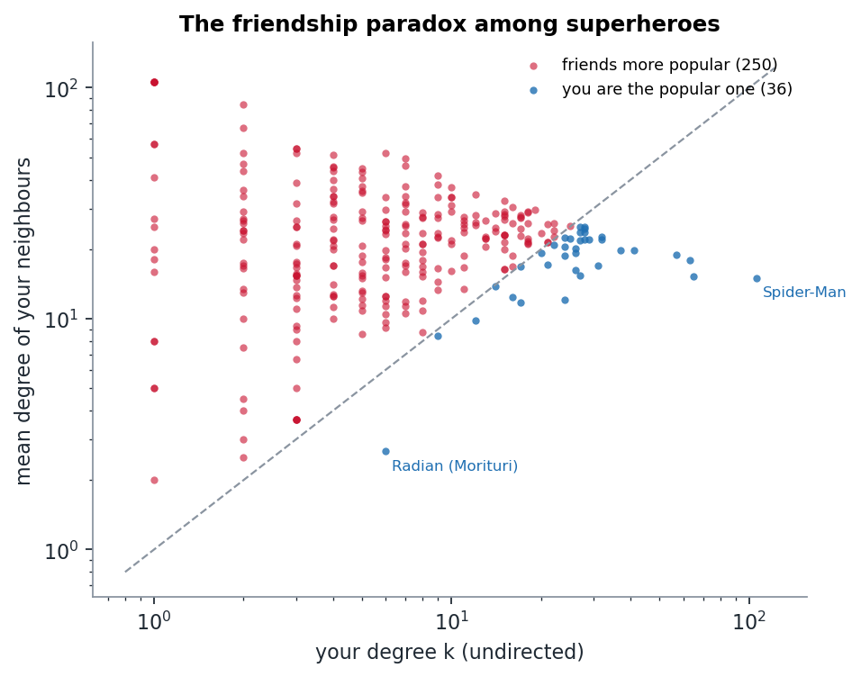

Week 2 · Models & null models
What survives the shuffle?
We rewired the Marvel network 200 times while keeping every character's degrees fixed. Reciprocity dies, triangles don't, and one "significant" result turned out to be the same finding counted twice.
The question
A number computed on a network means little on its own. Is 0.39 reciprocity a lot? Are 1,839 triangles a lot? The week-2 answer is compared to what?, and our "what" is a degree-preserving shuffle. We rewire the edges at random, but every character keeps exactly its in-degree and out-degree. Anything that survives the shuffle is explained by the degrees alone. Anything that dies needs a better explanation.
How we did it
200 shuffles with networkx.directed_edge_swap, at about 10 swaps per edge. On each one we measured five things and compared them with the real network.

| statistic | real | shuffles (mean ± sd) | z |
|---|---|---|---|
| reciprocity | 0.392 | 0.063 ± 0.007 | +46 |
| triangles (undirected) | 1,839 | 1,880 ± 58 | −0.7 |
| transitivity | 0.183 | 0.135 ± 0.004 | +12.5 |
| in–in assortativity | −0.007 | −0.045 ± 0.015 | +2.5 |
| giant component share | 0.914 | 0.914 (identical every time) | n/a |
What it means
Reciprocity is the big one. In the real network, 39% of links are returned. With the same degrees but random wiring, only 6% would be. Linking back is something editors actually do: if Venom's page mentions Eddie Brock, Eddie Brock's page almost certainly mentions Venom. Degrees cannot explain that.
Triangles survive. The real network has the same number of triangles as its shuffles. The hubs are so connected that triangles come for free.
But transitivity looks wildly significant (z = 12.5). How can that be, if the triangles are not? This puzzled us until we looked at the formula:
transitivity = 3 × triangles / connected triples
The triangles are the same, so the denominator must change, and it does. The shuffle destroys reciprocity. Pairs that used to link both ways (one undirected edge) become two separate one-way links to different characters (two undirected edges). A typical shuffle has about 1,725 undirected edges against the real 1,434, and about 42,000 connected triples against the real 30,231. Same triangles divided by more triples gives lower transitivity.
So the "clustering" signal is mostly the reciprocity signal counted a second time. We would not have caught this if we had only looked at the z-scores.
Assortativity: the real network is less disassortative than its shuffles, but z = 2.5 is a modest effect. We would not build a story on it.
The friendship paradox among superheroes

For each of the 286 characters with at least one neighbour, we compared their degree with the average degree of their neighbours:
- 87% of characters have neighbours who are more popular than they are.
- The average character has k = 10.0, but the average neighbour has k = 22.1. That is ⟨k²⟩/⟨k⟩ at work: hubs are counted once for every friend they have.
- Only two characters are more popular than every single one of their neighbours: Spider-Man (106) and Radian (6). Radian makes the list because he is the hub of the Strikeforce: Morituri island from week 1. He is a big fish in a pond of nine.
- The "popular friend" behind the paradox is usually Spider-Man. He is the most-connected neighbour of 106 characters, followed by Hulk (33) and Wolverine (19).
A tool check we did not expect to need
The giant component share was identical in all 200 shuffles. We first read that as "connectivity survives the shuffle". Then we checked how NetworkX's directed_edge_swap works. It rewires along a three-edge path, so it can never move an edge from one component to another. The Strikeforce: Morituri island is rewired inside itself, but stays an island. That number tells us about the algorithm, not about Marvel. A configuration-model null would be the right tool for that question.
Limitation
All of this compares against one null model. Degree-preserving shuffles answer "is it more than degrees?". They do not tell us why editors reciprocate. Team rosters, family relations and "first appeared in X's comic" are all candidate explanations, and we have not separated them.